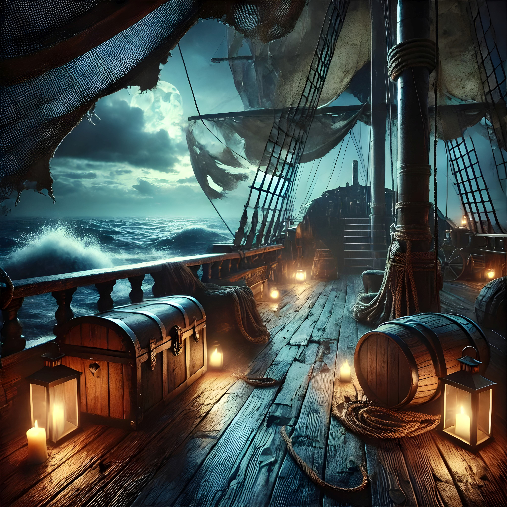

Jack kapitány és legénysége – Az óceánok rettegett urai

„A kincsért bármit megteszünk, de a becsületért mindent feladunk!” – Jack kapitány
Üdvözlünk a recsegő fedélzeten, ahol a rettegett Jack kapitány és hírhedt legénysége bemutatkozik! Merülj el a kalózélet zord valóságában, és ismerd meg a legénység legendás tagjait, akik a legfélelmetesebb kincseket kutatják és rettegésben tartják a tengerek hajósait. Készülj fel egy utazásra, amely tele van kalanddal, káosszal és arannyal!